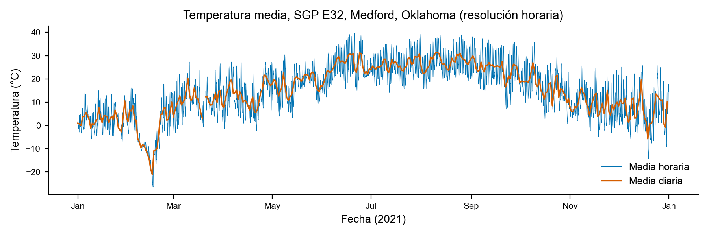
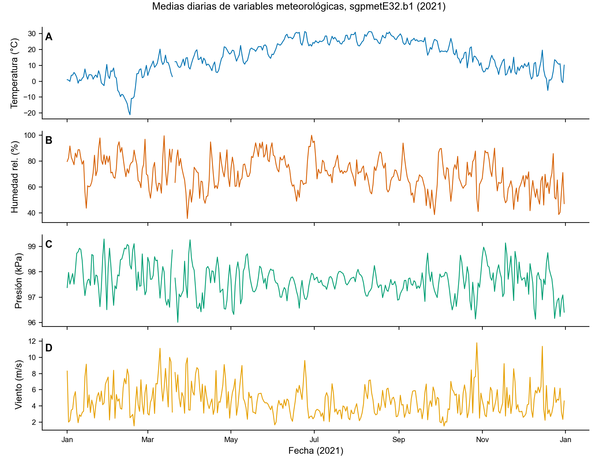
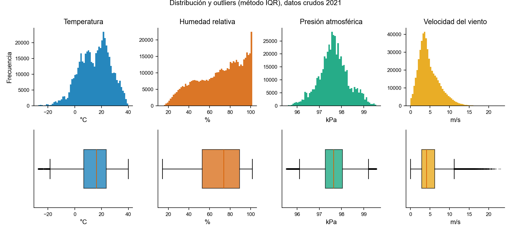
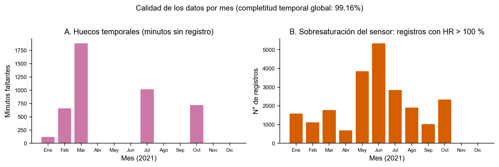
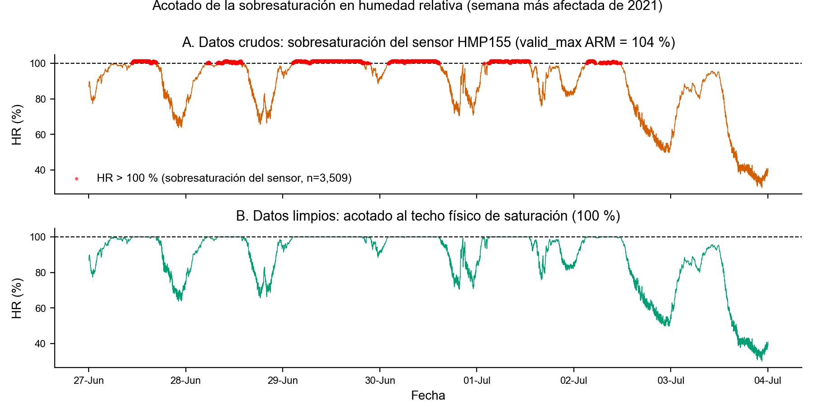
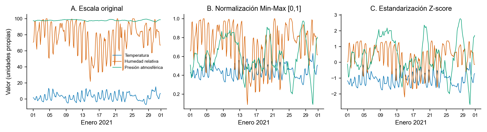
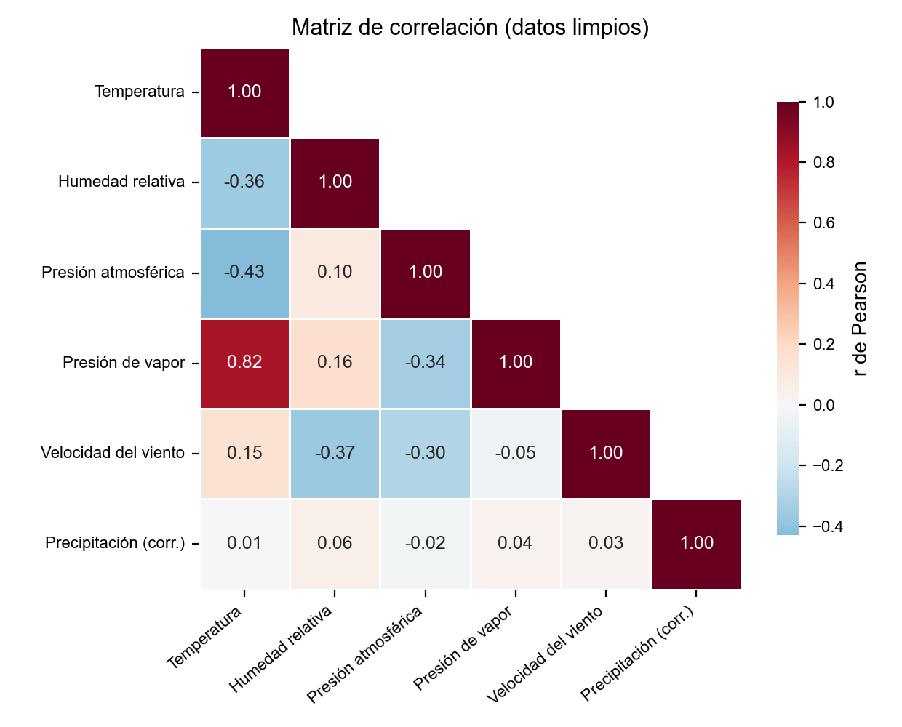
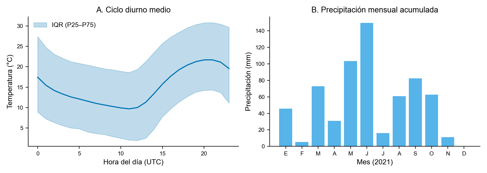
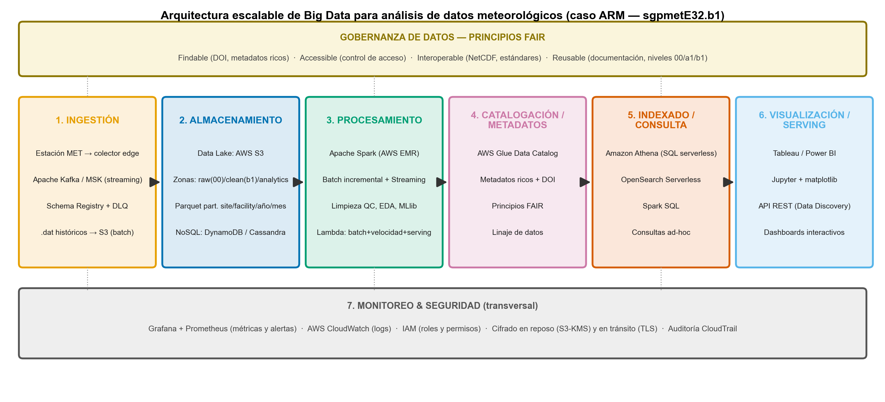

github.com/encinasquille/DataLifecyclePy/raw/main/data/raw/ARM_sgpmetE32.b1.2021.ncadc.arm.gov/discovery/#/results/s::sgpmetE32
Trabajamos el dataset siguiendo el ciclo de vida de los datos que vimos en clase. Partimos de los
datos crudos, hacemos el análisis exploratorio para encontrar los problemas del dataset (datos
vacíos, duplicados, correlaciones, outliers y ruido), y a partir de ahí limpiamos y transformamos
los datos. En cada fase comentamos los desafíos que aparecen cuando este flujo se lleva a escala
Big Data. Todo el análisis se hizo en Python con xarray, pandas,
matplotlib y seaborn; el código está en el Anexo A y es reproducible.
El dataset viene del programa ARM (Atmospheric Radiation Measurement) del Departamento de Energía de EE.UU. (Oak Ridge National Laboratory), el mismo caso de arquitectura Big Data en producción que se presentó en clase. Corresponde al instrumento MET (Surface Meteorological Instrumentation) de la instalación E32 del observatorio Southern Great Plains (SGP), en Medford, Oklahoma (lat 36.819°N, lon 97.820°W, alt 328 m s.n.m.).
| Característica | Descripción |
|---|---|
| Tipo de datos | Serie temporal multivariada de sensores. Datos estructurados: medidas numéricas continuas más flags de calidad discretos. Es instrumentación científica de tipo IoT. |
| Origen | Sensores físicos (termohigrómetro HMP155, barómetro, anemómetro, pluviómetro de balancín TBRG) que escriben a un datalogger. El proceso de ingesta es met_ingest -s sgp -f E32 (versión ingest-met-4.42). |
| Formato | NetCDF (Network Common Data Form), un formato binario autodescriptivo que es el estándar de la comunidad atmosférica. Da soporte a la I (interoperabilidad) de los principios FAIR. |
| Nivel de procesamiento | b1: datos calibrados que ya pasaron el control de calidad automático del ARM. Los niveles vistos en clase son 00 (brutos), a1 (calibrados) y b1 (con QC aplicado). |
| Frecuencia | Promedios cada 60 segundos (resolución de 1 minuto), año completo 2021. |
| Identificación FAIR | Datastream sgpmetE32.b1, accesible desde el portal ARM Data Discovery, con metadatos ricos y documentación del instrumento (principios Findable, Accessible, Interoperable, Reusable). |
El archivo NetCDF tiene 521,200 registros (la dimensión única es time) y
31 variables de datos, y ocupa 70.9 MB en disco. El rango va del
2021-01-01 00:00 al 2021-12-31 23:59 UTC. Un año completo a resolución de 1 minuto
tendría 525,600 registros, así que la completitud temporal es del 99.16%: faltan 4,400
minutos por interrupciones del instrumento. La verificación de integridad confirmó 0 timestamps
duplicados y un índice temporal estrictamente creciente.
Las variables se agrupan en tres bloques según su tipo de dato (el desglose suma las 31 variables
de datos, además de la coordenada time):
| Grupo | Variables | Tipo | Ejemplos |
|---|---|---|---|
| Temporales (como variables de datos) | 2 | datetime64[ns] | base_time, time_offset (más la coordenada time) |
| Medidas físicas (cuantitativas continuas) | 18 | float32 | temp_mean (°C), rh_mean (%), atmos_pressure (kPa), wspd_arith_mean (m/s), tbrg_precip_total_corr (mm), lat/lon/alt |
| Flags de control de calidad (categóricas codificadas) | 11 | int32 | qc_temp_mean, qc_rh_mean, … (bits empaquetados: bit 1 = valor faltante, bit 2 = < mínimo válido, bit 3 = > máximo válido, bit 4 = salto > valid_delta) |
Los metadatos globales del archivo son la base de la gobernanza de datos que vimos en clase.
Documentan el sitio (site_id: sgp, facility_id: E32), el datastream
(sgpmetE32.b1), la versión del software de ingesta, el intervalo de promediado (60 s),
las ecuaciones de corrección del pluviómetro y la semántica de cada bit de calidad. Gracias a esto
el archivo se entiende por sí solo, sin documentación externa, y se puede reutilizar.
| Variable | n | Media | Desv. est. | Mín | P5 | P50 | P95 | Máx | Asimetría |
|---|---|---|---|---|---|---|---|---|---|
| Temperatura (°C) | 521,199 | 15.05 | 11.51 | −27.14 | −3.72 | 16.16 | 33.13 | 39.91 | −0.31 |
| Humedad relativa (%) | 521,196 | 70.20 | 22.04 | 14.22 | 30.74 | 73.67 | 99.70 | 101.50 | −0.43 |
| Presión atmosférica (kPa) | 521,200 | 97.65 | 0.66 | 95.52 | 96.51 | 97.64 | 98.83 | 99.56 | 0.02 |
| Presión de vapor (kPa) | 521,200 | 1.36 | 0.82 | 0.00 | 0.33 | 1.12 | 2.76 | 3.63 | 0.40 |
| Velocidad del viento (m/s) | 521,200 | 4.70 | 2.67 | 0.00 | 1.26 | 4.09 | 9.90 | 22.95 | 1.04 |
| Dirección del viento (°) | 521,200 | 157.7 | 95.98 | 0.0 | 12.1 | 153.2 | 340.9 | 360.0 | 0.36 |
| Precipitación corr. (mm) | 521,200 | 0.00 | 0.02 | 0.00 | 0.00 | 0.00 | 0.00 | 2.11 | 30.51 |
| Voltaje datalogger (V) | 521,200 | 13.09 | 0.27 | 12.19 | 12.71 | 13.05 | 13.57 | 14.18 | 0.59 |
La precipitación es el total acumulado en cada intervalo de 1 minuto (unidad mm
del archivo). La dirección del viento (wdir_vec_mean) ya viene como media vectorial
calculada por el ARM, que maneja correctamente su naturaleza circular; sus estadísticos de la tabla
son solo descriptivos.


Aplicamos dos métodos complementarios vistos en clase: el criterio IQR (valores fuera de [Q1 − 1.5·IQR, Q3 + 1.5·IQR]) y el z-score (|z| > 3).
| Variable | Límites IQR | Outliers IQR | % IQR | Outliers |z|>3 | % z |
|---|---|---|---|---|---|
| Temperatura (°C) | [−18.6, 48.7] | 1,760 | 0.34% | 1,609 | 0.31% |
| Humedad relativa (%) | [−1.5, 143.3] | 0 | 0% | 0 | 0% |
| Presión atmosférica (kPa) | [96.1, 99.2] | 10,432 | 2.00% | 361 | 0.07% |
| Velocidad del viento (m/s) | [−2.1, 11.2] | 12,769 | 2.45% | 5,188 | 1.00% |

valid_max = 104 para esta variable. Es un comportamiento conocido del sensor que
conviene acotar al techo físico de 100% para el análisis.valid_delta = 20 °C/min.
Vale la pena notar que los flags de calidad (QC) del propio dataset apenas marcan 7 registros en todo el año. Al ser nivel b1, los datos ya pasaron el control de calidad automático del ARM. Esto muestra el concepto de niveles de datos visto en clase y explica por qué el ruido restante (como la HR sobre 100%, que el rango válido del instrumento permite hasta 104%) necesita reglas físicas adicionales para tratarlo en el análisis.
En la fase de limpieza del ciclo metodológico aplicamos este pipeline (código en el Anexo A):
qc_* ≠ 0 pasa a NaN,
siguiendo la regla del ARM de que un valor QC de cero significa que ninguna prueba falló.clip(upper=100). Optamos por acotar en vez de descartar para conservar el
dato, ya que se trata de un comportamiento conocido del sensor y no de un error. Así no se pierde
ningún registro de una variable válida.NaN para no inventar datos; preferimos cuidar la veracidad antes que forzar la
completitud.Con el acotado de la humedad y la interpolación de tramos cortos, las ocho variables principales quedan con 100% de completitud tras la limpieza. Conviene tener presente que la normalización Min-Max es sensible a extremos: el evento de febrero comprime el resto de los valores de temperatura, por lo que para modelos que lo requieran sería razonable un escalado robusto (mediana/IQR) o winsorizar antes de normalizar, manteniendo el evento en la serie cruda.




Este dataset es una sola estación, un solo instrumento y un solo año, y ya tiene medio millón de registros y 70.9 MB. El programa ARM opera cientos de instrumentos en decenas de instalaciones desde 1996, con colecta continua que llega a petabytes. Ese es el escenario Big Data real que se discutió en clase. Vemos los desafíos por fase del ciclo de vida y los conectamos con las V's de Big Data:
| Fase del ciclo de vida | Desafío en contexto Big Data | V asociada |
|---|---|---|
| Generación / Colecta | Sensores que muestrean cada segundo o minuto, 24/7, en sitios remotos. Las fallas de energía e instrumento generan huecos, como los 4,400 minutos que faltan aquí. | Velocidad, Veracidad |
| Ingestión | Los procesos automáticos (met_ingest) tienen que operar sin intervención humana, versionados y auditables. El streaming continuo exige tolerancia a fallos. | Velocidad, Volumen |
| Almacenamiento | Décadas de datos crudos y procesados en varios niveles (00/a1/b1). Hacen falta formatos comprimidos y autodescriptivos (NetCDF, Parquet) y almacenamiento distribuido (data lake). | Volumen, Variedad |
| Control de calidad | No se pueden inspeccionar a mano 106–109 registros. El QC se automatiza con flags bit-packed y, aun así, deja pasar comportamiento del sensor (HR > 100%) que requiere validación física adicional. | Veracidad, Validez |
| Catalogación / Metadatos | Sin metadatos ricos y DOIs los datos no se encuentran ni se pueden usar a escala. Los principios FAIR son la respuesta de gobernanza (el portal Data Discovery del ARM). | Valor |
| Análisis / Procesamiento | Analizar muchas estaciones por décadas no cabe en una sola máquina. Se necesita procesamiento distribuido (Spark sobre clusters, arquitecturas Lambda para batch más streaming). | Volumen, Velocidad |
| Visualización / Compartición | Comunicar millones de puntos obliga a agregar de forma inteligente (el remuestreo horario y diario de las Figs. 1 y 2) y a dashboards que escalen. | Visualización, Valor |
| Preservación / Reúso | Que datos de 1996 sigan siendo legibles y reproducibles en 2026 depende de estándares abiertos, documentación de instrumentos y versionado del software de ingesta. | Valor, Veracidad |
El dataset sgpmetE32.b1 (2021) es de alta calidad y muy útil. Tiene una completitud temporal del 99.16% sin timestamps duplicados, metadatos ricos y autodescriptivos conformes a los principios FAIR, control de calidad documentado con flags bit-packed, y captura bien tanto los ciclos físicos esperados (estacional, diurno, la correlación temperatura-presión de vapor r = 0.82) como eventos extremos reales, como la ola de frío de febrero de 2021 con −27.1 °C. Sus limitaciones son menores y se corrigen con el pipeline aplicado: 4,400 minutos de huecos, un 4.31% de registros con sobresaturación de humedad propia del sensor, y la necesidad de reglas físicas que complementen el QC automático. Tras la limpieza las variables principales quedan al 100% de completitud. Por todo esto se concluye que el dataset sirve para análisis climatológicos, para modelos de predicción meteorológica y como caso de estudio de cómo gestionar el ciclo de vida de datos científicos en un entorno Big Data.
Diseñamos una arquitectura escalable para gestionar y analizar datos meteorológicos como los del programa ARM, que sirve para cualquier flujo masivo de datos de sensores. El diseño sigue el modelo de capas visto en clase (plataforma de almacenamiento y procesamiento distribuido, gobernanza FAIR y capa de aplicaciones) y el flujo Ingestión → Almacenamiento → Procesamiento → Catalogación/Metadatos → Indexado/Consulta → Visualización/Serving, con Monitoreo y Seguridad como capa transversal.

En cada estación, un colector edge (o un agente productor) toma la salida del datalogger y la
publica hacia el sistema central. Esto es más realista que conectar el datalogger directo a la red,
sobre todo en sitios remotos. Para el flujo en tiempo real usamos Apache Kafka (o Amazon
MSK), con un tópico por datastream (por ejemplo sgp.met.E32), que desacopla
productores de consumidores y aguanta picos de carga. Las cargas batch de archivos
históricos .dat se suben directamente a S3, sin pasar por Kafka. En la ingesta validamos
el esquema contra un Schema Registry (versiona y verifica los contratos de datos) y los
registros que fallan la validación van a una cola de descarte (DLQ) o zona quarantine/
para reprocesarlos después. Escalabilidad: Kafka reparte el tópico entre particiones, así que
agregar estaciones solo pide más particiones.
Un data lake en AWS S3 organizado en zonas que replican los niveles de datos del ARM:
raw/ (nivel 00, datos brutos inmutables), clean/ (nivel b1, con QC) y
analytics/ (agregados). Guardamos en NetCDF (interoperabilidad científica) y
Parquet particionado por site/facility/year/month, una jerarquía que permite podar
particiones en las consultas. Para accesos operativos de baja latencia (la última lectura de cada
estación) usamos una base NoSQL: DynamoDB (partition key = estación, sort key =
timestamp) o Cassandra si se prefiere controlar el cluster. Escalabilidad: S3 crece sin
límite práctico y el particionado evita escanear datos que no se necesitan.
Apache Spark sobre AWS EMR (nodo primario con el driver y nodos core/task con executors, como se vio en clase). Montamos una arquitectura Lambda con sus tres capas. La capa batch corre el pipeline de limpieza del EDA de forma incremental, procesando solo las particiones nuevas o afectadas (el día o mes recién aterrizado), y reserva el recálculo completo del histórico para cuando cambia la lógica o hace falta un backfill. La capa de velocidad (Spark Structured Streaming consumiendo de Kafka) calcula métricas casi en tiempo real y dispara alertas de eventos extremos. La capa de serving reconcilia las vistas batch e incremental para que cada consulta lea la combinación correcta. MLlib permite entrenar modelos distribuidos. Elegimos Lambda sobre Kappa porque queremos batch reproducible sobre el histórico, asumiendo el costo de mantener dos rutas de cómputo. Escalabilidad: EMR agrega y quita nodos según la carga (scale-out horizontal).
AWS Glue Data Catalog registra de forma automática (con crawlers) los esquemas, las particiones y las estadísticas de cada tabla del data lake. Cada datastream recibe un identificador persistente (DOI), documentación del instrumento y linaje de datos (qué versión de software produjo qué archivo). Esta capa concreta los principios FAIR: sin catálogo, un data lake de petabytes se vuelve un "data swamp" donde no se encuentra nada.
Amazon Athena permite consultas SQL serverless directamente sobre el Parquet del data lake usando el catálogo de Glue (se paga por datos escaneados, y el particionado del Paso 2 reduce ese costo). Para búsqueda de texto y metadatos y para exploración facetada, como el portal Data Discovery del ARM, usamos OpenSearch Serverless. Los científicos de datos también consultan con Spark SQL desde notebooks. Escalabilidad: Athena es serverless; DynamoDB se usa en modo on-demand y OpenSearch Serverless escala solo.
Tableau (o Power BI) conectado a Athena para dashboards interactivos; JupyterHub con matplotlib y seaborn para el análisis científico reproducible, como el EDA de la Parte 1; y una API REST que sirve datos a aplicaciones externas, igual que el portal del ARM. La clave de escalabilidad acá es servir agregados precalculados (medias horarias y diarias) en lugar de los 521 mil puntos por estación-año.
Monitoreo: Grafana y Prometheus muestran las métricas de salud del pipeline (lag de Kafka,
duración de los jobs Spark, porcentaje de registros con flags QC por día; una caída de completitud
como la de marzo de 2021 dispararía una alerta). CloudWatch centraliza los logs.
Seguridad: IAM con roles de mínimo privilegio por capa, cifrado en reposo (S3 con KMS) y en
tránsito (TLS), auditoría con CloudTrail y control de acceso por zona del data lake (la zona
raw/ es de solo escritura para la ingesta e inmutable para el resto).
Seguimos una lectura de temperatura de la estación SGP E32 del 15 de febrero de 2021, durante la ola de frío, con −27.1 °C:
{"st":"sgpmetE32","t":"2021-02-15T00:01Z","temp":-27.1,"rh":78.2,…}) al tópico Kafka
sgp.met.E32 tras validar el esquema.PK=sgpmetE32, SK=2021-02-15T00:01Z) para el dashboard en vivo.s3://datalake/raw/sgp/met/E32/2021/02/15/ (nivel 00,
inmutable).clean/
(nivel b1).SELECT date_trunc('day', time) AS dia, min(temp_mean) AS t_min
FROM clean.met
WHERE site='sgp' AND facility='E32' AND year=2021 AND month=2
GROUP BY 1 ORDER BY 2 LIMIT 5;
y obtiene en segundos los días más fríos del evento, escaneando solo la partición de febrero.Entorno: Python 3.14, xarray 2026.4, pandas, numpy, matplotlib, seaborn.
Script completo: src/eda_arm_sgpmet.py.
import xarray as xr, pandas as pd, numpy as np
# 1) Carga del NetCDF y conversion a DataFrame temporal
ds = xr.open_dataset("ARM_sgpmetE32.b1.2021.nc") # 521,200 x 31 data_vars
df = ds[vars_fisicas + vars_qc].to_dataframe()
# 2) Integridad y completitud temporal (esperados: 365*1440 = 525,600 min)
dup = df.index.duplicated().sum() # 0 duplicados
completitud = 100 * len(df) / 525600 # 99.16 %
# 3) Outliers: IQR y z-score
q1, q3 = s.quantile([.25, .75]); iqr = q3 - q1
out_iqr = (s < q1 - 1.5*iqr) | (s > q3 + 1.5*iqr)
out_z = np.abs((s - s.mean()) / s.std()) > 3
# 4) Limpieza: flags QC -> NaN; acotado fisico de HR; imputacion temporal
clean = df[vars_fisicas].mask(df[vars_qc].ne(0).values) # QC != 0 -> NaN
clean['rh_mean'] = clean['rh_mean'].clip(upper=100) # techo de saturacion
clean = clean.interpolate(method='time', limit=60) # tramos <= 60 min
# 5) Transformacion: normalizacion
minmax = (clean - clean.min()) / (clean.max() - clean.min())
zscore = (clean - clean.mean()) / clean.std()